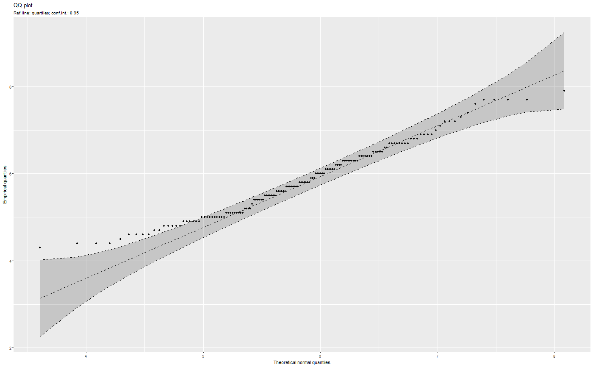
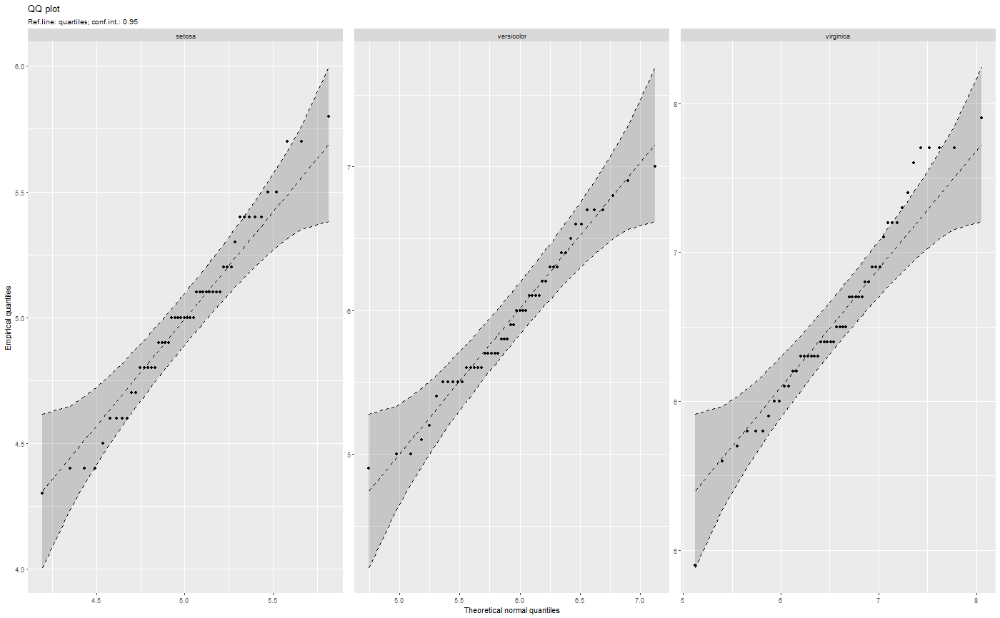
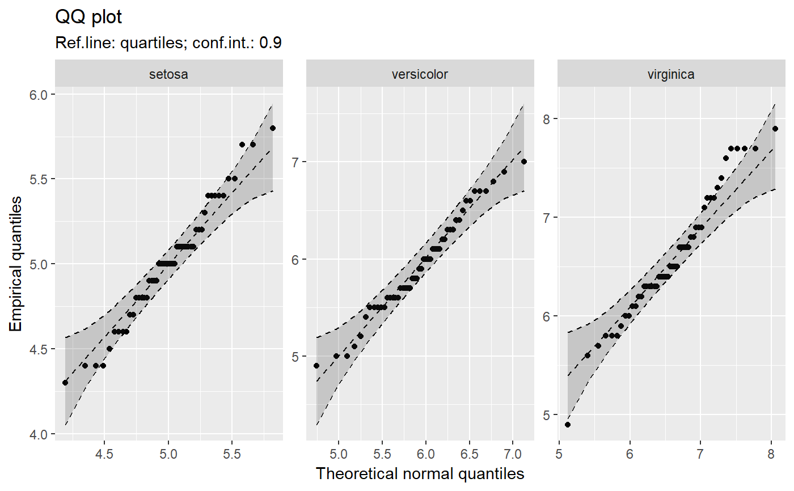
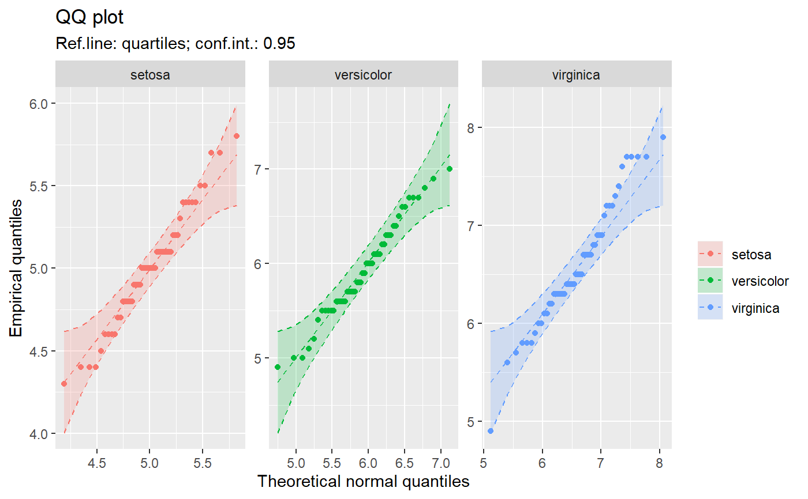
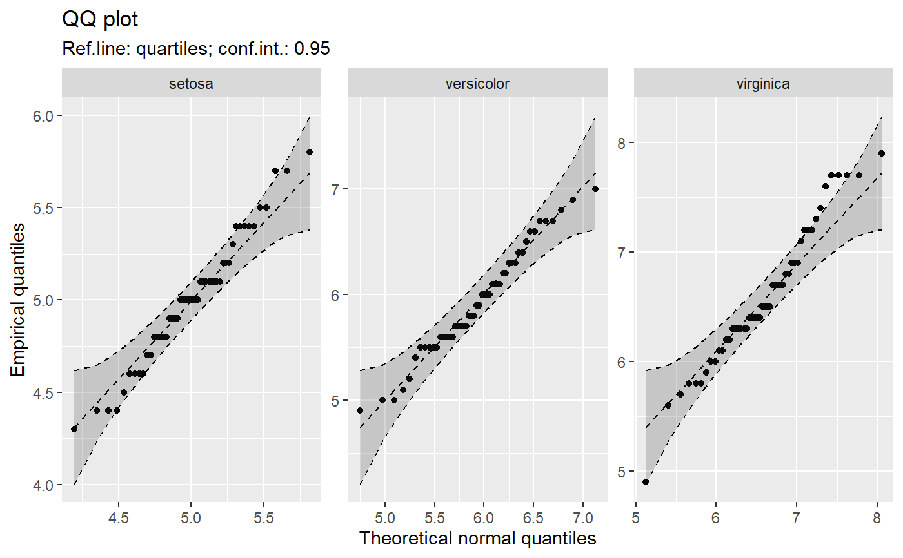
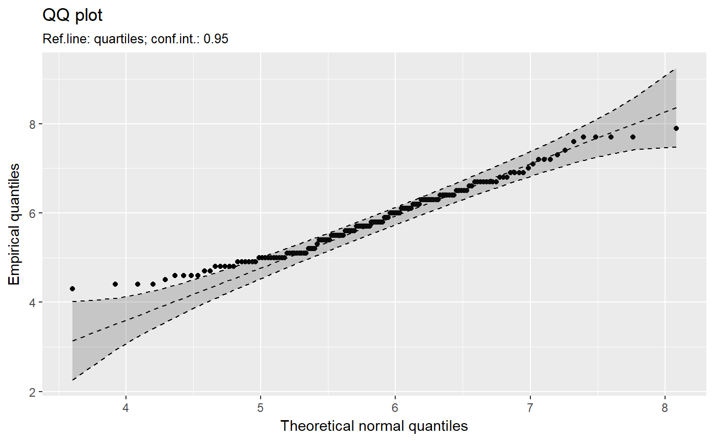
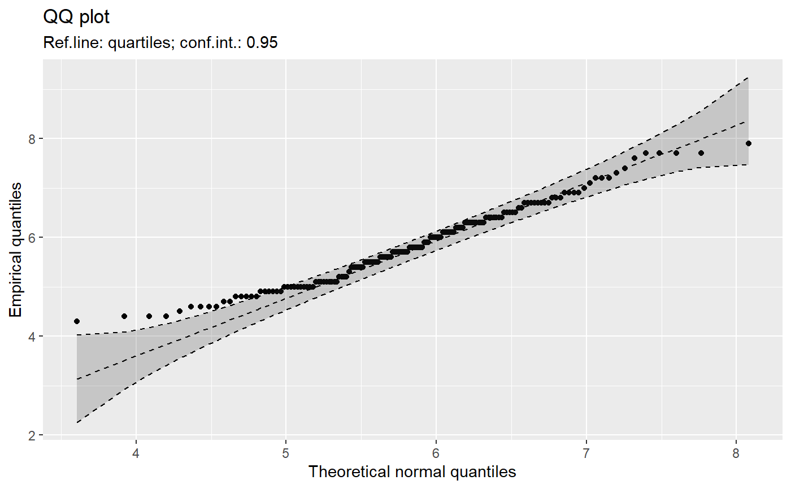
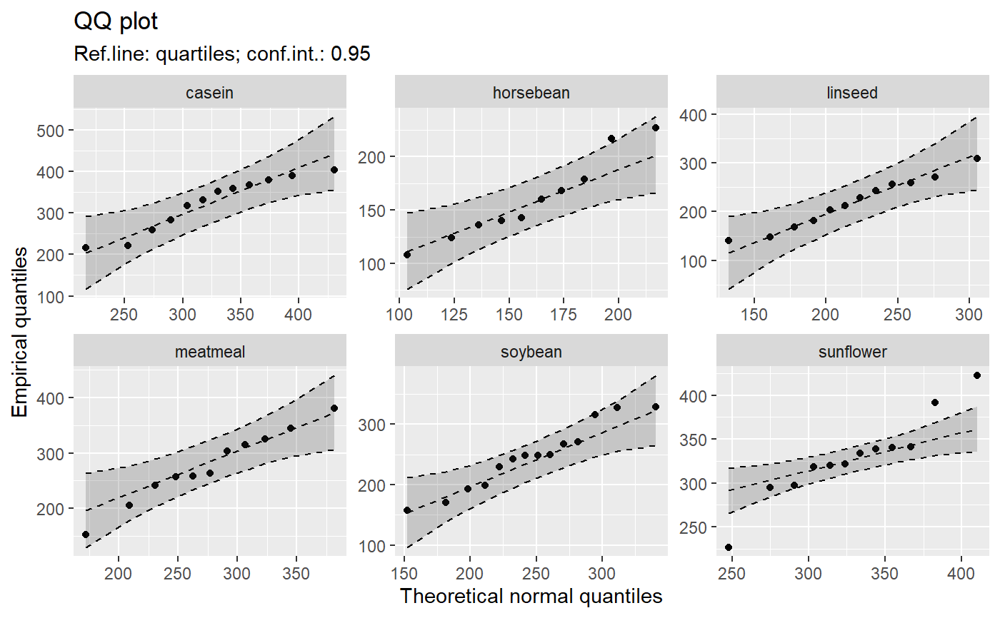
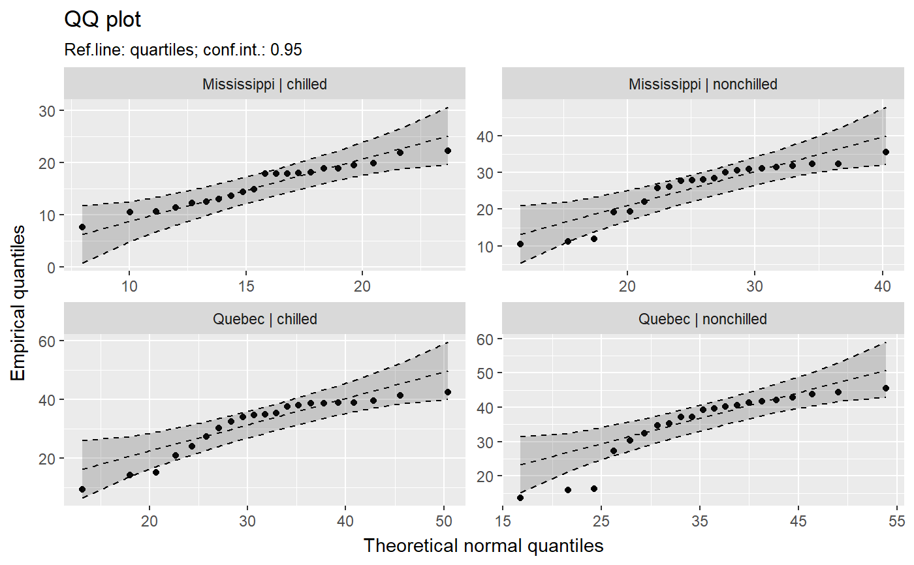

[!] A QQ-plot for multiple groups
qq_plot.RdMake a quantile comparison plot (qq-plot) for each subset of groups separately using ggplot2 graphics.
qq_plot(y, data = NULL, distribution = "norm", ..., line = c("quartiles", "robust", "int=0,slope=1", "0,1", "none"), envelope = 0.95, method = c("mle-normal", "trimmed-normal", "moment-normal", "any"), labels = NULL, groups = NULL, use_colors = FALSE, scales = "free", sep = " | ")
Arguments
| y | (formula|numeric|character)
Either a formula, a numeric vector or a name of a vector
in |
|---|---|
| data | A data frame that contains the variables mentioned in |
| distribution | root name of comparison distribution -- e.g., |
| ... | Parameters to be passed to function, selected in |
| line | (string) A parameter, that controls how reference line is drawn. Options:
|
| envelope | (numeric | |
| method | (string:
Options |
| groups | ( |
| use_colors | (logical) use colors for multiple groups |
| scales | ("free"|"free_x"|"free_y"|"fixed")
a parmeter to be passed to
|
| sep | (character)
Group name separator if more than one grouping variable is used.
default is |
Value
A ggplot2 object
Details
Function qq_plot is inspired by qqPlot() in package car
(writen by J. Fox).
See also
Examples
qq_plot("Sepal.Length", data = iris)# Formula (several groups): qq_plot(Sepal.Length ~ Species, data = iris)qq_plot(Sepal.Length ~ Species, data = iris, envelope = 0.90)# Formula (several groups in colors): qq_plot(Sepal.Length ~ Species, data = iris, use_colors = TRUE)# Vectors (several groups): qq_plot(iris$Sepal.Length, groups = iris$Species)# For one group: qq_plot("Sepal.Length", data = iris)qq_plot(~Sepal.Length, data = iris)qq_plot(iris$Sepal.Length)# Other examples qq_plot(~weight, data = chickwts)qq_plot(weight ~ feed, data = chickwts)qq_plot(uptake ~ Type + Treatment, data = CO2)